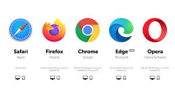

Web Browsers
What is a Web Browser?
A Web Browser is a software application used to access and view websites on the Internet. It acts as a bridge between you and the web server, translating complex code like HTML, CSS, and JavaScript into the visual pages, images, and videos you see on your screen.
How Browsers Work
When you type a URL or click a link, the browser performs several high-speed tasks:
- Contacting DNS: It finds the IP address of the server.
- Requesting Data: It sends an HTTP/HTTPS request to the server.
- Rendering: It receives the code and "paints" the website for you to interact with.

The History: From WorldWideWeb to Chrome
The first web browser, originally called WorldWideWeb (later renamed Nexus), was created by Tim Berners-Lee in 1990. However, it was text-heavy and simple.
In 1993, Mosaic was released, which was revolutionary because it was the first browser to display images inline with text. This led to the "Browser Wars" of the 90s between Netscape Navigator and Microsoft’s Internet Explorer. Today, modern browsers like Google Chrome, Mozilla Firefox, and Safari are built on powerful engines designed for speed and security.